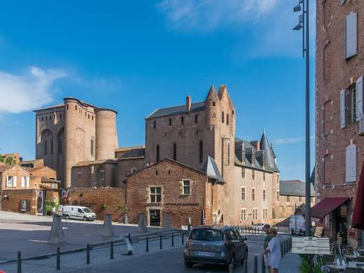

Toulouse-Lautrec
Peintre Albigeois


⟹ Mémoire & Patrimoine artistique ⟸
Henri de Toulouse-Lautrec naît à Albi en 1864, dans une famille de la vieille aristocratie tarnaise, comtes de Toulouse-Lautrec-Monfa. Enfant fragile puis victime de deux fractures aux jambes qui freinent définitivement sa croissance, il trouve dans le dessin un exutoire précoce, encouragé par sa mère et par son entourage familial déjà porté sur les arts et le monde des chevaux.

Formé auprès de peintres animaliers puis à Paris dans les ateliers de Bonnat et de Cormon, il s'installe à Montmartre à la fin des années 1880. Il y devient l'observateur et le portraitiste du monde des cabarets, des maisons closes, des artistes de cirque et des danseuses, qu'il représente sans complaisance ni misérabilisme, avec un sens aigu du mouvement et de la ligne.
Son travail d'affichiste, notamment pour le Moulin Rouge, révolutionne l'art de l'affiche par la simplification des formes et l'usage de l'aplat coloré, marqué par l'influence de l'estampe japonaise. Il reste toute sa vie profondément attaché à l'Albigeois, où il revient régulièrement en famille, au château du Bosc ou à Malromé.
Fragilisé par une santé déclinante et l'alcoolisme, il meurt en 1901 à seulement trente-six ans. Sa mère, la comtesse Adèle de Toulouse-Lautrec, fait don d'une grande partie de son œuvre à sa ville natale, donnant naissance au musée qui porte aujourd'hui son nom au cœur d'Albi.
« On ne devrait coucher qu'avec les femmes qu'on ne connaît pas. »
— Attribué à Henri de Toulouse-LautrecIl revendiquait un regard sans jugement sur les milieux qu'il fréquentait, préférant observer et restituer la vérité d'un geste ou d'une posture plutôt qu'idéaliser ses modèles. Cette exigence de sincérité, nourrie par sa propre expérience de la différence physique, traverse l'ensemble de son œuvre.